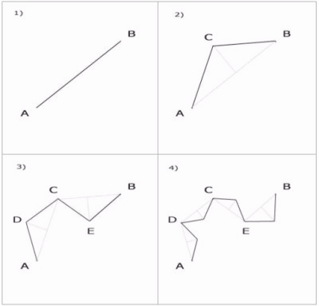
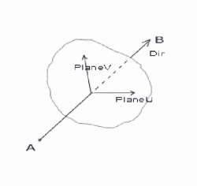
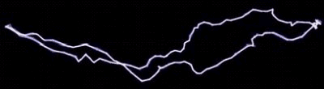
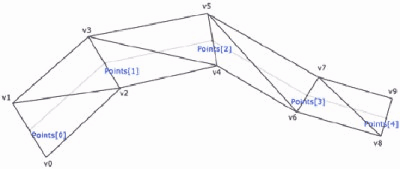
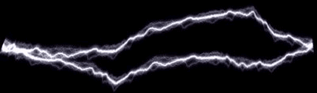
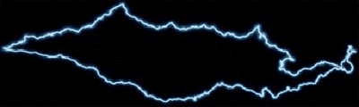
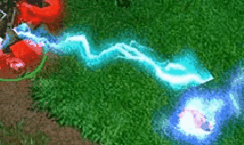

Создание фрактальных молний
В этой статье вы узнаете, как создавать реалистичные молнии и выводить их на экран. Выводить молнии на экран мы будем по массиву точек, полученных алгоритмом, который называется “Фрактализация отрезка”. Рендерить ее можно многими способами и я опишу все, которые дают приемлемую картинку.
Фрактализация отрезка
Этот метод заполняет массив (Array of TVector) точками, определяющими тело молнии. Вся сложность заключается в том, чтобы создать кривую, по форме похожую на реальную молнию. Метод фрактализации отрезка заключается в том, что кривая формируется рекурсивным делением отрезка и заменой на случайное колено. Для начала рассмотрим двумерный случай фрактализации. Допустим, нам даны две концевые точки A и B (это начало молнии и ее конец). Первым шагом мы заменяем отрезок AB двумя отрезками AC и CB, где точка C выбирается случайным образом вдоль срединного перпендикуляра отрезка AB, причем она может лежать по обе стороны отрезка. Далее мы рекурсивно делим отрезки AC и CB, получим уже 4 отрезка AD, DC, CE и EB, далее делим их и так делаем до получения желанной кривой.
Но как определить, что нужно остановить рекурсию? Глубину рекурсии можно контролировать по ее уровню (то есть когда уровень рекурсии достигнет какого то числа или по длине отрезка прямой. Если молния не будет занимать много пикселей на экране, тогда можно продолжать рекурсию, до предела разрешающей способности самого монитора. Но я использовал первый метод и вам советую, это дает хорошее управление глубиной фрактализации.
Теперь, о том, как формировать кривую в пространстве. Здесь точка C будет выбираться случайным образом из плоскости, перпендикулярной отрезку и лежащей на его середине. Для этого находим два вектора, допустим PlaneU и PlaneV, с помощью векторных произведений. Эти вектора и будут представлять нужную плоскость точек.
Кратко формулу получения точки C можно записать так:
C = 0.5 * (A+B) + factor * (PlaneU * RND + PlaneV * RND)
Здесь RND - дает случайное число от -0,5 до 0,5, а factor - это величина возмущения. То есть, чем больше factor, тем сильнее дергается молния. Нормальное значение factor от 0,1 до 0,4.
Dir := VectorSubtract(A, B); PlaneU := VectorCrossProduct(Dir, YAxis); PlaneV := VectorCrossProduct(PlaneU, Dir); NormalizeVector(PlaneU); NormalizeVector(PlaneV); C[0] := 0.5*(A[0] + B[0]) + factor*(PlaneU[0]*(random-0.5) + PlaneV[0]*(random-0.5)); C[1] := 0.5*(A[1] + B[1]) + factor*(PlaneU[1]*(random-0.5) + PlaneV[1]*(random-0.5)); C[2] := 0.5*(A[2] + B[2]) + factor*(PlaneU[2]*(random-0.5) + PlaneV[2]*(random-0.5));
Теперь, когда мы получили точку C, нам нужно рекурсивно разделить полученные отрезки. Все полученные точки занесем в массив Points, чтобы потом вывести их на экран. Вот код этой процедуры:
procedure Fract(A, B : TVector; factor : Single; maxFracDepth, fracCount : Byte);
var
Dir, PlaneU, PlaneV, C : TVector;
begin
inc(fracCount); // Увеличим глубину рекурсии
if fracCount > maxFracDepth then // Если then глубина рекурсии больше заданной, тогда…
begin
inc(numPoints);
points[numPoints] := B; // Сохраним точку и выходим
exit;
end;
Dir := VectorSubtract(A, B);
PlaneU := VectorCrossProduct(Dir, YHmgVector);
PlaneV := VectorCrossProduct(PlaneU, Dir);
NormalizeVector(PlaneU);
NormalizeVector(PlaneV);
C[0] := 0.5*(A[0] + B[0]) + factor*(PlaneU[0]*(random-0.5) + PlaneV[0]*(random-0.5));
C[1] := 0.5*(A[1] + B[1]) + factor*(PlaneU[1]*(random-0.5) + PlaneV[1]*(random-0.5));
C[2] := 0.5*(A[2] + B[2]) + factor*(PlaneU[2]*(random-0.5) + PlaneV[2]*(random-0.5));
Fract(A, C, factor*fracDec, maxFracDepth, fracCount); // Рекурсивно делим отрезок AC
Fract(C, B, factor*fracDec, maxFracDepth, fracCount); // Рекурсивно делим отрезок CB
end;
Копировать
Чтобы кривая выглядела правильно, нужно уменьшать уровень возмущения (factor) по мере увеличения глубины рекурсии. Для этого я ввел переменную fracDec, на которую умножается factor; она должна быть меньше единицы и больше нуля. Нормальное ее значение около 0.5 или 0.6.
Вот код процедуры, объединяющей все вышесказанное:
procedure DoFractalLightning(Src, Dst : TVector;
factor{сила возмущения},
fracDec{коэффициент ослабления возмущения}: Single;
maxFracDepth{максимальная глубина} : Byte;
cR, cG, cB {цвет}: Single);
var i : Integer;
begin
numPoints := 0;
points[0] := Src;
fracLev := fracLev * VectorDistance(Src, Dst);
Fract(Src, Dst, factor, maxFracDepth, 0);
end;
С помощью параметров factor и fracDec можно управлять молнией. Немного изменяйте эти параметры, и вы поймете, как они влияют на генерацию молнии.
Теперь, когда мы сгенерировали координаты молнии, самое время ее рендерить. Я выделю 3 способа рендеринга.
Вывод линиями
Это первое, что приходит в голову, нужно просто выводить линии нужного цвета и толщины по полученным точкам.
glLineWidth(Width); glColor4fv(@Color); glBegin(GL_LINE_STRIP); for i := 0 to NumPoints do glVertex3fv(@Points[i]); glEnd;
Для улучшения внешнего вида можно выводить несколько линий с небольшими отклонениями в каждой точке. В итоге может получиться вот такая картина:
Такой вид молнии хорошо использовать, когда она находится далеко от камеры или занимает небольшое пространство на экране.
Вывод текстурированной лентой.
Суть метода заключается в том, что нужно вывести ленту треугольников (GL_TRIANGLE_STRIP) с текстурой молнии.
Здесь точки, обозначенные синими надписями “Points[]”, являются исходными точками, а вершины треугольников v0, v1, …, v9 вычисляются с помощью одного векторного произведения на каждую вершину.
Например, первые две вершины вычисляются так:
dir := VectorSubtract(Points[0],Camera.Position); //Находим направление из камеры в точку Points[0] up := VectorCrossProduct ( dir, ZAxis ); NormalizeVector ( up ); v1 := VectorAdd ( Points[0], VectorScale ( up, Width ) ); v0 := VectorAdd ( Points[0], VectorScale ( up, -Width ) );
Остальные пары вершин вычисляются так же.
Чтобы точек не было слишком много maxFracDepth должен быть не больше 4х, иначе будут небольшие искажения.
Поскольку текстура не растягивается на все тело молнии, а повторяется для каждой пары треугольников (хотя можно и растянуть на несколько пар треугольников), то текстурные координаты просто чередуются. Для вершины v1 текстурные координаты будут (1, 0), для v0 будут (1, 1), для v3 (0, 0), для v2 (0, 1), потом опять (1, 0) и (1, 1) и так далее. Одно замечание: для этого метода нужно отключить mipmapping, иначе могут появляться артефакты, поэтому при создании текстуры используем текстурный фильтр GL_LINEAR, вместо GL_LINEAR_MIPMAP_LINEAR.
Таким образом, треугольники молнии будут всегда повернуты к камере. Конечно, если смотреть на нее вдоль кривой, то будут видны плоские полигоны, но с этим реально ничего не сделаешь, это один из недостатков метода. Второй недостаток - это ее не гибкость. То есть, чтобы такая молния выглядела нормально, нужно придерживаться некоторых ограничений в размерах и количестве точек (глубине рекурсии).
Вывод биллбоардами
Здесь нужно, помимо самой кривой, в каждой ее точке выводить биллбоард, тогда получается красивое свечение. Чтобы не образовывались сгустки белого цвета в местах сильного изгиба кривой, нужно использовать функцию смешивания - glBlendFunc(GL_SRC_ALPHA, GL_ONE_MINUS_SRC_ALPHA ) и текстуру биллбоарда сделать 32х битной, то есть с альфа каналом.
Хотя этот вид молнии довольно красиво выглядит, он медленный, ведь приходиться выводить несколько сотен биллбоардов за кадр. Помимо этого есть еще один недостаток. Поскольку мы выводим линии, а размер линии не зависит от расстояния до обозревателя, то при сильном удалении от молнии, линия полностью перекроет свечение, а на очень близком расстоянии – наоборот, станет слишком маленькой. По этому для больших расстояний можно использовать только свечение без линий (режим 3 в демо). Как видите, нет универсальных методов вывода молний, у каждого есть свои недостатки и преимущества.
Другие методы создания молний
Часто в играх используют совершенно другой метод создания молний. Это вывод на экран осевого биллбоарда с текстурой молнии, осью которого будет являться отрезок AB. Для этого нужно иметь несколько заранее отрендеренных (или нарисованных) текстур молнии, которые будут меняться через определенный промежуток времени. В такой текстуре можно обрисовать все детали – изгибы, свечения и ответвления.
Кстати, я запечатлел скрин из игры Warcraft 3, в котором видно, как выглядят молнии в этой игре.
Здесь используется всего одна текстура, и для анимации меняют только текстурные координаты (на самом деле здесь еще сделано дрожание сетки, на которую наносится текстура). Однако здесь используется не осевой биллбоард, а прямоугольная сетка, расположенная противоположными углами к источнику молнии и цели (это видно по углам в верхней левой и правой части скрина). Ну а для молнии с неба в Warcraft3 используют тот же осевой биллбоард.
Советую почаще наблюдать в играх разные спец. эффекты. Это может натолкнуть вас на мысли по реализации или подкинуть идею. Конечно, вы не поймете сразу, как это закодировать, но ведь считаете себя программистом игр, не так ли? По этому снимайте скрины эффектов с разных сторон и разглядывайте, думайте…
Александр Гарустович http://www.mirgames.ru/